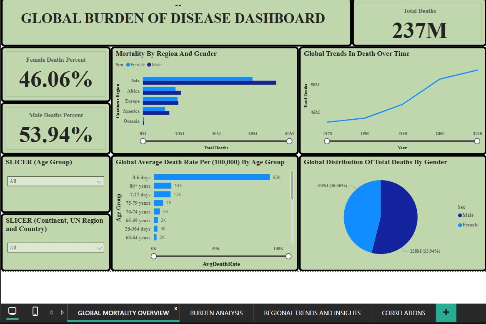

Using Power BI, I conducted a comprehensive analysis of global mortality trends, focusing on key metrics such as total deaths, death rates per 100,000, and regional variations over time. By evaluating these indicators, I identified patterns in disease burden, assessed the impact across different age groups and genders, and uncovered insights into high-burden regions. The analysis provided valuable perspectives on global health disparities, aiding in data-driven decision-making for public health interventions. The findings were presented with actionable recommendations aimed at improving health policies and resource allocation for better global health outcomes.
.
For this project, I analyzed the sales performance of Northwind Traders using a Power BI dashboard. The goal was to assess key metrics such as revenue, order volume, product trends, customer purchasing behavior, and employee sales contributions. Additionally, I evaluated shipping efficiency and discount strategies to uncover trends, optimize operations, and drive business growth. I used SQL to extract and also merge the appropriate fields needed for analysis, and then I went on to create visualizations on Power BI
Using Power BI, I analyzed global tuberculosis trends, examining prevalence, mortality rates, and the impact of HIV across regions. This project highlights high-burden areas, tracks TB trends over time, and provides data-driven insights for targeted interventions. Findings support informed decision-making in public health strategy and resource allocation.
I conducted an in-depth analysis of the S&P 500 from 1985 to 2022, examining trends, volatility, and market performance. Using Power BI, I built a six-page interactive dashboard covering Closing Price Trends, Opening Price Dynamics, High Price Insights, Low Price Patterns, Volume & Volatility, and Market Performance. This project provides insights into historical market behavior, helping investors understand key patterns over time.
This is a project I developed for a bike business using Microsoft Excel to analyze customer purchasing behavior and improve sales strategies. The Bike Sales Dashboard provides insights into how factors like commute distance, income level, and age influence bike purchases. With customizable filters for marital status, gender, education, and more, it enables data-driven decision-making to better understand the target audience and enhance marketing efforts.
Hospital Data Dashboard is a project I developed using Microsoft Excel to help a healthcare facility analyze key operational metrics and improve patient management. It provides insights into patient distribution by financial class, average wait times by doctor type, consultation and medication revenue, and patient visit trends. With interactive slicers for doctor type and financial class, the dashboard enables data-driven decisions to enhance efficiency and optimize hospital resources.